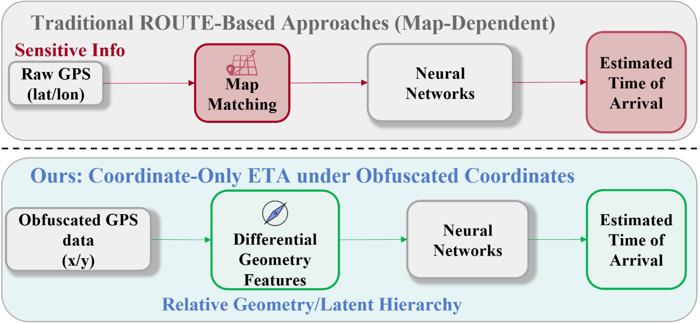
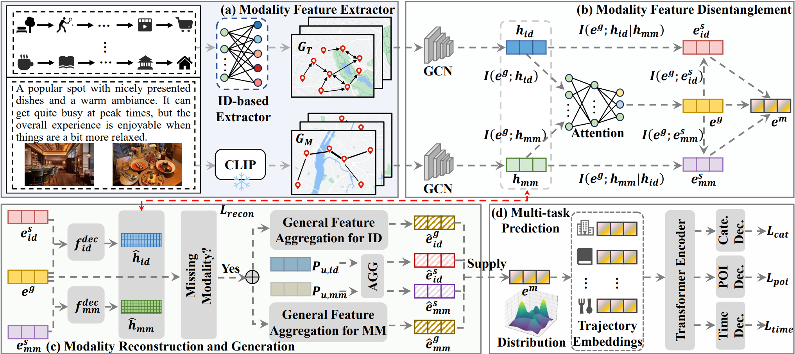
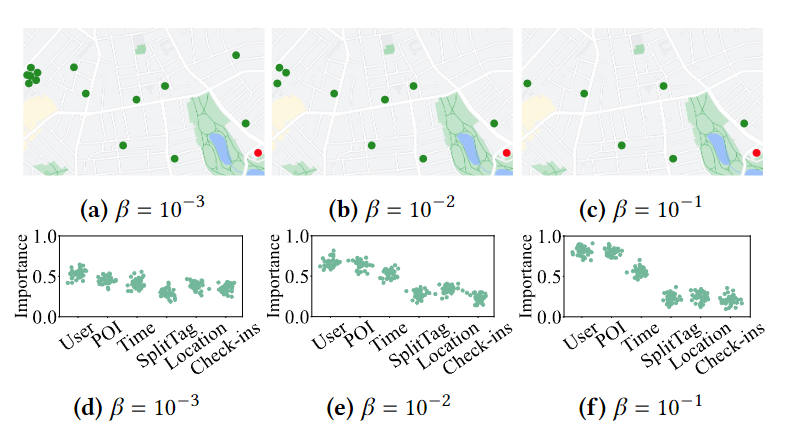
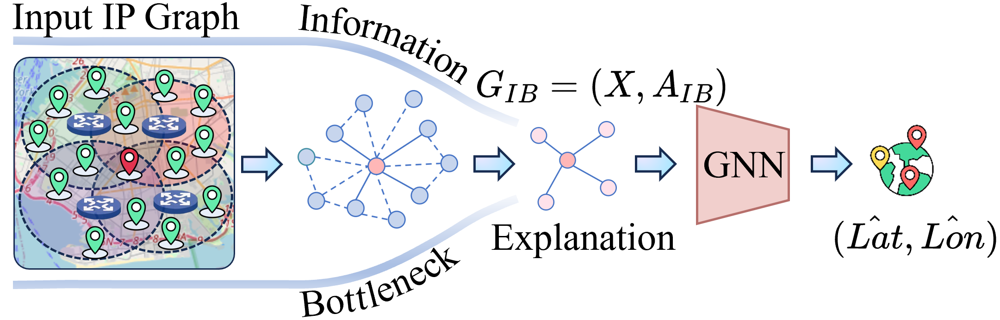

Kai Yang
Harbin Institute of Technology (Shenzhen)
Supervisor: Prof. Xun Zhou
IEEE & ACM Student Member
Research interests: Spatial-temporal Data Mining, Recommendation System, Trustworthy AI
Email: kaiyang.cs AT outlook.com
[Google Scholar]
[GitHub]
Short Bio
I am currently a PhD student at Harbin Institute of Technology (Shenzhen) (HITSZ), supervised by Prof. Xun Zhou. My research focuses on spatial-temporal data mining, recommendation system and trustworthy AI.
Before that, I received my B.Eng. and M.Eng. degrees from the School of Information and Software Engineering, University of Electronic Science and Technology of China (UESTC) in 2022 and 2025, respectively.
Recent News
- [2026/08] 1 paper accepted by IEEE ICDM 2026.
- [2026/07] 1 paper submitted to SIGKDD 2027.
- [2026/06] 1 paper accepted by ACM MM 2026.
- [2026/01] 1 paper submitted to ACM TOIS.
- [2025/12] 1 paper submitted to ACM TKDD.
- [2025/09] Joined HITSZ as a PhD Candidate.
- [2025/06] Graduated from UESTC.
- [2024/10] Received the National Scholarship.
Selected Publications

Ruopu Li, Yong Chu, Kai Yang, James Jianqiao Yu, Lixia Wu, Xun Zhou
ICDM 2026, CCF-B
SHAPE is a spatial hyperbolic-embedding augmented pretraining framework for estimated time of arrival on obfuscated trajectories, which learns robust route representations via differential geometric feature decomposition and hybrid Euclidean-hyperbolic contrastive self-supervised learning.

Kai Yang, Xun Zhou
ACM MM 2026, CCF-A
RoPOI is a robust point-of-interest recommendation framework built on modality disentanglement and missing representation generation, which mitigates performance degradation from modality absence while preserving discriminative modality-specific information.

Kai Yang, Yi Yang, Qiang Gao, Ting Zhong, Yong Wang, Fan Zhou
SIGIR 2024, CCF-A
ExNext is a self-explainable POI recommendation framework that improves trustworthiness by balancing accuracy and explainability, leveraging information theory to learn compact, informative representations.

Kai Yang, Wenxin Tai, Zhenhui Li, Ting Zhong, Guangqiang Yin, Yong Wang, Fan Zhou
ICASSP 2024, CCF-B
ExGeo endows the IP geolocation model with explainability via a variational graph information bottleneck, balancing concise explanation and informative representation.
Honors
- National Scholarship of China 2024
- First-class Scholarship of UESTC 2024
- China Shenzhen Stock Exchange Scholarship 2023
- 3rd Place, China People's Net AI Algorithm Competition 2023
Services
- Conference Reviewer: ICLR, AAAI, KDD
- Journal Reviewer: IEEE TKDE
unique visitors since November 2023
Last update: Aug 2026